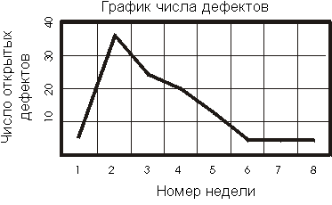

| Концепция: Ключевые характеристики тестов |
 |
|
| Связанные элементы |
|---|
ВведениеКлючевые характеристики тестов - охват и качество. Охват характеризует полноту теста и выражается в том, в каком объеме охвачены требования к тестированию или исполняемый код. Качество характеризует надежность, стабильность и производительность объекта тестирования (системы или приложения). Для оценки качества анализируются результаты тестирования и ошибки, обнаруженные при выполнении тестов. Измерение охватаИзмерив охват тестирования, можно ответить на следующий вопрос: "Насколько полно проведено тестирование?" Наиболее распространенные методы измерения охвата оперируют охватом требований к программному обеспечению и охватом исходного кода. В целом охватом тестирования можно назвать любую величину, измеренную либо по отношению к требованиям (охват на основе требований), либо по отношению к критериям реализации (охват на основе кода). Например, можно проверить все варианты использования (охват требований) или все строки исходного кода (охват кода). Все систематизированные методики тестирования основаны на той или иной стратегии охвата. В стратегии охвата сформулирована цель тестирования, и поэтому от нее напрямую зависит создание тестов. Формулировка стратегии охвата может быть очень простой, например: "Проверить все функции". Охвата требований может быть достаточно для количественного измерения полноты тестирования в случае, если полностью описаны все требования к системе. Например, если определены все требования к тестированию производительности, можно говорить о их количественном охвате: проверено 75% требований к тестированию производительности. Если применяется охват по коду, стратегии тестирования формулируются в терминах объема исходного кода, выполненного в ходе тестирования. Подобные стратегии тестирования очень важны для систем безопасности. Оба измерения можно проводить вручную (с помощью уравнений, приведенных в следующих разделах) или с помощью инструментов автоматизации тестирования. Охват на основе требованийМногократное измерение охвата требований в ходе цикла тестирования позволяет сделать охват одной из вех жизненного цикла, например, при оценке запланированного, реализованного, выполненного и завершенного тестирования.
Выразив эти значения в процентах, можно получить следующую форму для оценки охвата тестирования:
Эту количественную оценку охвата тестирования можно сравнить с предопределенными критериями. Если критерии не выполнены, появляется возможность оценить, сколько еще тестирования потребуется. Охват на основе кодаСтратегия охвата на основе кода предполагает измерение количества кода, выполненного во время тестирования, и сравнение полученного значения с объемом кода, подлежащего выполнению. Количество кода можно измерять с помощью потоков управления (операторы, ветви и пути) и потоков данных.
Охват кода измеряется по следующей формуле:
Выразив это значение в процентах, можно получить следующую оценку для охвата тестирования по коду:
Эту количественную оценку охвата тестирования можно сравнить с предопределенными критериями. Если критерии не выполнены, появляется возможность оценить, сколько еще тестирования потребуется. Измерение качестваХотя оценка охвата тестирования позволяет получить представление о полноте теста, качество программного обеспечения удобнее оценивать путем анализа ошибок, обнаруженных в ходе тестирования. Полученная таким способом оценка качества характеризует качество программной системы в целом. Измеренное качество программного обеспечения - это величина, показывающая, насколько программное обеспечение соответствует предъявляемым к нему требованиям. Поэтому в данном контексте ошибки рассматриваются как особый тип запросов изменений, в которых объект тестирования не соответствовал требованиям к программному обеспечению. Для оценки ошибок могут применяться разнообразные методы - от простого подсчета количества до сложного статистического моделирования. В хорошей процедуре оценки должны применяться предположения относительно частоты обнаружения ошибок в ходе тестирования. Как правило, частоту обнаружения ошибок характеризуют распределением Пуассона. Фактические данные затем подставляются в эту модель. Полученная оценка позволяет судить о текущей надежности программного обеспечения и прогнозировать рост надежности по мере продолжения тестирования и исправления ошибок. Подобную оценку обычно называют моделированием роста надежности программного обеспечения, и в настоящее время ведутся интенсивные исследования в данной области. В силу отсутствия инструментов для проведения подобных оценок рекомендуется сопоставить стоимость применения данного подхода с преимуществами, которые можно получить от его применения. Анализ ошибок - эта стратегия заключается в изучении распределения ошибок по разным атрибутам, связанным с ними. Результаты анализа ошибок позволяют судить о надежности программного обеспечения. Стратегия анализа ошибок обычно оперирует четырьмя атрибутами:
Если рассматривать количество ошибок как функцию времени, можно строить диаграммы и графики изменения количества
ошибок. Можно создавать отчеты о плотности ошибок и их распределении по значениям атрибутов, например серьезности и
состоянию. Подобные виды анализа позволяют получить представление о динамике обнаружения и исправления ошибок и, как
следствие, о надежности программного обеспечения. В подобных видах анализа должны учитываться только подтвержденные ошибки. Не все обнаруженные ошибки в действительности являются ошибками - часть из них представляет собой требования расширить набор функций системы, часть - повторные отчеты об уже обнаруженных ошибках. Тем не менее, никогда не помешает узнать, какое количество ошибок регистрируется в качестве повторных, а какое - не подтверждается. Отчеты об ошибкахВ Rational Unified Process рекомендовано оценивать ошибки по нескольким категориям:
Многие из этих отчетов полезны при оценке качества программного обеспечения. Максимальную пользу они приносят в сочетании с отчетами о ходе и результатах тестирования, в которых приведены данные о количестве тестов, выполненных на различных итерациях и циклах тестирования приложения. В число стандартных условий тестирования входит ограничение на количество открытых ошибок определенных категорий (например, определенной серьезности), что очень легко проверить по отчетам о распределении ошибок. Отсортировав или сгруппировав распределение по нужным признакам, можно сфокусироваться на важнейших тенденциях. Как правило, для создания подобных отчетов требуются специализированные инструменты. Отчеты о плотности ошибокСостояние и приоритеты ошибокРекомендуется присваивать приоритеты всем ошибкам. Обычно достаточно четырех приоритетов:
Примечание: критерии успешного тестирования можно выразить в форме целевого распределения ошибок по приоритетам. Например, тестирование можно считать успешным, если нет ошибок приоритета 1 и открыто меньше пяти ошибок приоритета 2. Рекомендуется создать диаграмму распределения ошибок, как показано на следующей иллюстрации.
В данном случае очевидно, что условия не выполнены. На диаграмме нужно включить фильтр, чтобы были показаны только открытые ошибки. Состояние и серьезность ошибокВ отчетах о серьезности указано распределение ошибок по серьезности (например, отказ системы, недоступность важной функции, незначительное неудобство). Состояние ошибок и их расположение в модели реализацииВ этом отчете показано распределение ошибок по элементам модели реализации. Отчеты о давности ошибокАнализ давности ошибок позволяет получить хорошее представление об эффективности тестирования и устранения ошибок. Например, если большинство давних неисправленных ошибок находятся в состоянии ожидания подтверждения исправления, вероятно, недостаточно внимания уделяется повторному тестированию. Отчеты о тенденциях распределения ошибокОтчеты о тенденциях распределения ошибок дают очень хорошую видимость состояния процесса тестирования. В ходе цикла тестирования тенденции проходят несколько хорошо предсказуемых стадий. На начальном этапе резко возрастает количество обнаруженных ошибок, которое в какой-то момент достигает пика, а затем начинает медленно снижаться.  Данную тенденцию можно сопоставить с графиком проекта. Если на в течение третьей недели четырехнедельного цикла тестирования по-прежнему растет количество обнаруживаемых ошибок, проект совершенно точно выбивается из графика. При таком прямолинейном анализе тенденций предполагается, что ошибки исправляются быстро, и что исправления проверяются в очередных компиляциях продукта, то есть, тенденция закрытия ошибок должна развиваться примерно так же, как тенденция из обнаружения. Если это не так, скорее всего, что-то происходит не по плану на этапе устранения ошибок, либо недостаточно ресурсов для повторного тестирования и проверки исправления ошибок.
На этой диаграмме хорошо видна тенденция - сначала обнаружено много ошибок, а затем, со временем, их находят все меньше и меньше. Тенденция количества открытых ошибок повторяет тенденцию обнаружения ошибок с небольшим запозданием. Тенденция количества закрытых ошибок развивается со временем по мере исправления и проверки обнаруженных ошибок. Подобная картина свидетельствует об успешном тестировании. Если в вашей среде тенденции существенно отличаются от показанных на этой диаграмме, можно предположить, что вам требуются дополнительные ресурсы в определенных областях разработки или тестирования. Как и охват тестирования, анализ ошибок представляет собой отличную базу для формулировки критериев оценки тестирования. Показатели производительностиДля оценки производительности объекта тестирования и сбора данных о его поведении, включая время отклика, продолжительность выполнения операций, стабильность и ограничения, применяются несколько показателей. В основном эти показатели оцениваются в ходе выполнении задачи Оценка тестирования, однако некоторые из них используются в задаче Выполнить тесты для оценки хода выполнения и состояния тестирования. Основные показатели производительности:
Динамический мониторингДинамический мониторинг применяется для просмотра данных о тестировании в реальном времени, обычно в форме гистограмм и графиков. В данных отчетах приводятся такие данные, как текущее состояние и ход выполнения сценариев тестирования.
Например, на гистограмме выше показаны 80 сценариев, выполняющих один и тот же вариант использования. В состоянии Idle (простой) находятся 14 сценариев, в состоянии Query (запрос) - 12, SQL Execution (выполнение SQL) - 34, SQL Connect (установка соединения SQL) - 4 и Other (прочие состояния) - 16. В ходе тестирования распределение тестов по состояниям будет меняться. Приведенная выше гистограмма характерна для нормального хода тестирования приблизительно в середине теста. Если в ходе тестирования сценарии остаются в одном и том же состоянии, скорее всего, при выполнении теста возникла ошибка, либо требуется скорректировать методику измерения производительности. Отчеты о пропускной способности и времени откликаВ этих отчетах приводятся данные о времени отклика и пропускной способности (количестве выполненных транзакций) объекта тестирования. Как правило, эти отчеты представляют собой графики с временем отклика (или пропускной способностью) на оси Y и количеством событий на оси Х.
Иногда возникает потребность в просмотре и вычислении статистических показателей, например стандартного отклонения, в дополнение к непосредственным показателям производительности. Процентные отчетыПроцентные отчеты представляют собой отдельную разновидность отчетов, в которых показано процентное распределение собранных данных.
Сравнительные отчетыСравнение результатов выполнения различных тестов производительности позволяет оценить влияние изменений, внесенных между выполнением тестов, на производительность объекта тестирования. Для сравнения двух наборов данных (соответствующих различным выполнениям теста) и анализа изменений применяются сравнительные отчеты. Трассировочные отчетыЕсли объект тестирования демонстрирует неприемлемую производительность, либо если мониторинг свидетельствует о возникновении узких мест (например, когда сценарии тестирования в течении длительного времени остаются в каком-либо определенном состоянии), лучшим средством диагностики могут стать трассировочные отчеты. В трассировочных отчетах содержится низкоуровневая информация. В частности, в этих отчетах приведены сообщения, которыми субъект обменивается с объектом тестирования, поток выполнения, операции обращения к данным, сведения о вызовах функций и системных вызовах. |

© Copyright IBM Corp. 1987, 2006. Все права защищены.. |